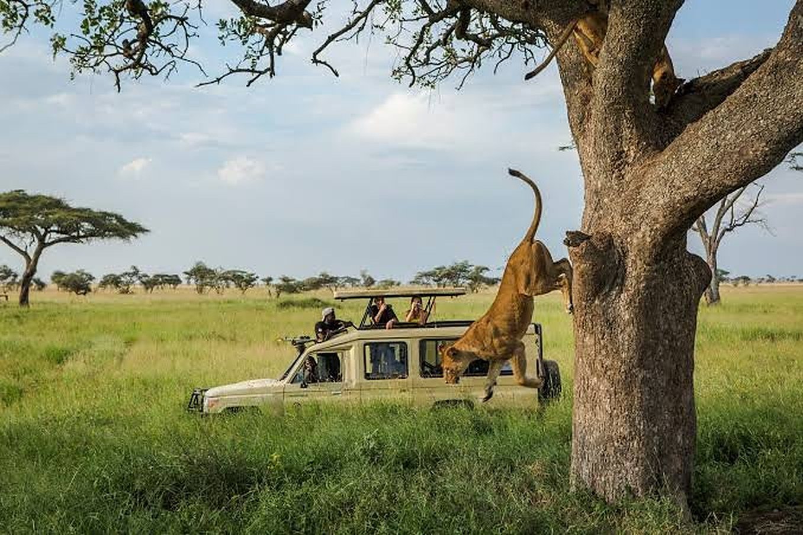

The reality of the transport column: a diesel-dependent safari product. Photograph: Onyango George / EA Hospitality Pulse
Reaching a lodge is getting dearer five times faster than the lodge. Nairobi and Kampala published it on the same day.
Every East African price release prints the cost of moving a guest and the price of housing one in adjacent rows. In Kenya's and Uganda's September returns the first is running at four to six times the second, and that gap is the region's margin.
On the evening of 23 September, in a function room at the Kampala Serena Hotel, Uganda's tourism establishment gathered to announce that it had won something. The Future Hospitality Summit Africa, the investment conference that has spent recent years in Cape Town and Nairobi, will convene at the Speke Resort Convention Centre on 2 and 3 February 2027. The Uganda Tourism Board co-hosted the reception. Juliana Kagwa, the board's chief executive, had her moment. The pitch to the room, and through it to the capital the room was meant to attract, covered hotels, aviation, tour operations and everything beneath.
The following morning, a directive signed nine days earlier by the Bank of Uganda took effect, raising the cash reserve requirement for commercial banks from 11 per cent to 13.5 per cent and stripping two and a half percentage points of lendable liquidity out of the banking system in a single reporting cycle. The circular, signed by David Kalyango, the central bank's executive director for supervision and regulation, framed this as support for "prudent liquidity management" and for "the effectiveness of monetary policy transmission". In plainer terms: the shilling was sliding, and the central bank wanted the money market to stop helping it slide.
Both were reported. The number that mattered more than either was published a week later, in a routine table, and went unmentioned.
Every statistics office in East Africa measures consumer prices against the same international classification, and that classification puts two things of unusual interest to this industry in adjacent rows. One is transport, which is what it costs to move a person. The other is restaurants and accommodation services, which is what it costs to house and feed one. Nobody reads them together, and on 30 September two of the region's three bureaux published them on the same morning.
The Kenya National Bureau of Statistics put annual transport inflation at 15.6 per cent and annual restaurants and accommodation services inflation at 3.0 per cent. The Uganda Bureau of Statistics recorded transport at 9.8 per cent and restaurants and accommodation at 2.3 per cent. Two countries, two currencies, two fiscal regimes, and in each the cost of delivering a guest is rising at four to six times the rate at which the guest's stay is repriced. In Uganda the divergence widened from both ends at once: transport inflation rose from 9.4 per cent to 9.8 per cent over the month, while restaurants and accommodation inflation fell from 2.5 per cent to 2.3 per cent.
Tanzania publishes on a different calendar, and its most recent figures, released 8 September and covering August, show the same shape: transport at 13.8 per cent against restaurants and accommodation at 3.0 per cent. The September print is due on 8 October, a dated test of whether this is a regional pattern or a coincidence of two.
That gap is not an abstraction. It is the sector's margin, measured by the state, in public, monthly.
The engine of the transport column is diesel, and both bureaux publish national average retail prices, which makes the movement harder than anything the trade press has carried.
| Sept 2025 | Sept 2026 | Change | |
|---|---|---|---|
| Uganda diesel | Shs4,736 | Shs6,757 | +42.7% |
| Uganda petrol | Shs5,080 | Shs6,642 | +30.7% |
| Kenya diesel | KSh172.64 | KSh219.04 | +26.9% |
| Kenya petrol | KSh185.59 | KSh214.95 | +15.8% |
Read that down the pairs rather than across the rows, because it contains something the industry has not priced. A year ago diesel was the cheaper fuel in both countries. Today it is the dearer one, by Shs115 in Uganda and KSh4.09 in Kenya. The crossover matters because of who buys what. Petrol is the price quoted on the news, debated in parliament and used as shorthand for the cost of living. Diesel is what a safari fleet burns, what a generator burns at an off-grid camp, and what the lorry bringing that camp its supplies burns. The fuel this industry actually buys has moved past the fuel everyone watches.
The transmission into safari product is direct, because safari product is substantially a diesel product. A game drive is fuel, a vehicle and a wage. Transfers are fuel. Water pumping, cold storage and lighting at a camp beyond the grid are, after dark and under cloud, fuel. Figures cited by the Shippers Council of Eastern Africa in September put fuel's share of regional road transport costs at 55 per cent, against 38 per cent in 2021. Agayo Ogambi, the council's chief executive, framed it in terms any operator costing a season would recognise: "The key challenge is not only infrastructure capacity, but the cost and unpredictability of moving cargo across the entire corridor."
The other column, the one that will not move, is a pricing-power problem with three causes, none of which resolves itself by February. The first is contractual: a camp in the Serengeti or a lodge on the Nile sells in dollars, to overseas tour operators, on rate cards agreed twelve to eighteen months ahead, so revenue is fixed in a hard currency at a price set in the past while costs reprice monthly against a commodity up 43 per cent. The second is supply, the region having added rooms faster than it has sold forward years. The third is domestic demand, squeezed in Kenya by the same release: food at 9.5 per cent and overall inflation at a one-year high of 6.8 per cent.
Operators have a reflex answer to cost shocks of this kind, and it is worth saying why it fails. The reflex is the dollar hedge: earn hard currency, spend soft, and let depreciation widen the margin on its own. The currency has obliged, the Tanzanian shilling 6.7 per cent weaker year on year in August and the Ugandan shilling down from a Shs3,704.51 August average to around Shs3,918 this week, with only the Kenyan shilling holding still near KSh129.5. But depreciation pads a dollar earner's margin only to the extent its costs are genuinely local, and diesel is not local. Neither are tyres, vehicle parts, generator spares, reinsured cover or dollar-denominated debt on a rebuild. These are dollar-priced inputs settled in shillings, so a weaker shilling raises them directly. Uganda's 43 per cent is not primarily a story about world oil prices. It is substantially the local-currency price of a dollar commodity. Susan Kavuma, an economist at Makerere University's School of Economics, put it to the Daily Monitor in mid-September: "A depreciation of the shilling means a higher cost of imports and, therefore, the economy is likely to experience inflationary pressures." For a tented camp four hours from tarmac, almost everything is an import.
The revenue leg of that hedge is not growing either. The Bank of Tanzania's Monthly Economic Review, published on 30 September, puts travel receipts for the year to August 2026 at $4.39bn against $4.31bn, growth of 1.7 per cent in nominal dollars, which is to say none at all after price. Transport receipts rose 26.4 per cent to $3.30bn on transit freight. Tanzania's services account is growing. The growth is trucks.
Financing tightened in the same fortnight. Uganda's reserve requirement increase takes liquidity out of the banking system precisely when lodges draw working capital for the high season. Benoni Okwenje, general manager for financial markets operations at Centenary Bank, defended the logic: "Cutting liquidity in the banking industry will help bring down risks of speculation and volatility in the foreign currency market." That may be right for the currency. It is unambiguously a higher price of credit for a borrower whose collateral is a camp. In Kenya the squeeze is subtler: the central bank has held its policy rate at 8.75 per cent since February through four meetings, and its Monetary Policy Committee next meets on 7 October with core inflation up from 3.4 to 4.0 per cent in a month. Headline inflation can be blamed on weather. Core cannot, and the easing runway Kenyan borrowers were counting on to refinance looks like closing.
One detail in the Kenyan release should change how operators read all of this. Transport prices fell 0.4 per cent month on month in September, and pump prices for diesel and petrol were unchanged. The annual 15.6 per cent is therefore a level effect rather than a spiral: fuel stepped up over the year and is now holding. That is better news than a spiral and worse news than it sounds, because a spiral eventually breaks while a level persists. This cost base will not inflate away. It has to be priced.
A cost that has reset rather than spiked invites a structural answer rather than an annual one, and operators have started reaching for it: not a cheaper litre, but fewer of them. Gerard Beaton, head of operations at Asilia Africa, described the shift to Tourism Update in May, before the worst of this year's move: "The fuel surge in prices is a relatively recent thing. But I definitely think there are people who have been more conscious of it in the past few months." He put the cost of converting a safari vehicle to electric at between $25,000 and $30,000, and said rising fuel prices "definitely increases the appetite for vehicle conversions". Appetite is not finance. Converting a fleet of eight is a quarter of a million dollars of capital expenditure, requested from a banking system that has just had its lending capacity cut, by a borrower whose dollar revenue grew 1.7 per cent.
Michael Atingi-Ego, the Bank of Uganda's governor, told an audience in mid-September that the bank "has what it takes to stabilise this exchange rate. So, be still. All will be fine." On the currency he may be vindicated. But stability at Shs3,900 is not a return to Shs3,700, and the fuel bill has already reset. A stabilised currency delivers certainty rather than relief, and certainty at the new level is what belongs in 2027 contracts.
Which returns the argument to the Serena, and forwards to February. When FHS Africa convenes at Speke Resort, the room will be deciding whether to put money into East African hospitality, and the demand case is real enough: Africa was the strongest region in IATA's August traffic data at 4.4 per cent passenger growth, though on capacity up 7.2 per cent and the weakest load factor of any region. The pitch will lead on demand. The sharper people in the room will have read further down the page, to the two rows that sit side by side in every East African price release, and will ask what those rows pose. Not whether the region can fill its rooms, but whether an operator whose room rate is rising 3 per cent can carry a fleet whose fuel is rising 43.
That question sorts operators rather than describing a sector. A lodge with a balance sheet can convert a fleet, buy fuel forward, or carry a thinner season and wait for the rate cycle. A lodge without one can do none of those, and the exit available to an owner who cannot finance the gap is to sell to an owner who can. Squeezes of this kind rarely close businesses so much as change whose name is above the door, and at an investment summit that is not the warning it sounds like. It is the pipeline. Some of the capital arriving at Speke Resort in February will be buying from the people this September is squeezing.
Rate cards for 2027 are being signed now.
📣 Telegram 💬 WhatsApp 💼 LinkedIn 📚 All guides